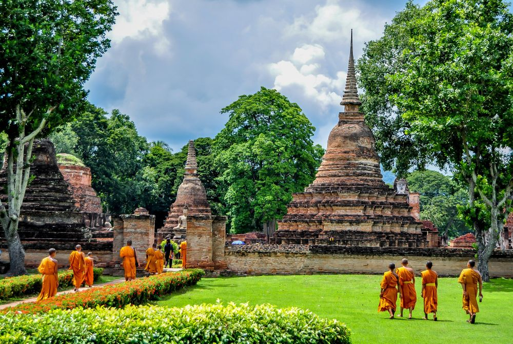

Het prachtige Ayutthaya is de voormalige koningsstad van Thailand Het historische park is bezaaid met Boeddhabeelden, en je komt er het ene adembenemende tempelcomplex na het andere tegen. Ayutthaya is de erfenis van het oude Thailand, en je kijkt er je ogen uit.
Op slechts 100 kilometer boven Bangkok ligt de historische stad Ayutthaya, een plek die zo’n vier eeuwen lang de hoofdstad was van het machtige koninkrijk Ayutthaya. In 1767 werd de stad echter vernield en geplunderd door de Birmezen, en kwam er een eind aan alle pracht en praal. De prachtige tempels veranderden langzaam maar zeker in ruïnes en werden overwoekerd door de natuur.
Het stadje Ayutthaya
Het oude Ayutthaya ligt op een eiland waar de rivieren Chao Phraya, Lop Buri en Pasak samenkomen. Hoewel een groot deel van dit eiland uit tempels bestaat, is er ook een deel waar je als reiziger kunt verblijven. Ten oosten van het tempelcomplex vind je een aantal kleine guesthouses en hostels, wat restaurantjes en een paar winkeltjes. Je vindt hier zelfs een kleine, maar gezellige night market. Het is hier lang niet zo druk als op markten elders in het land, maar het eten is goed, en het uitzicht op de rivier zal je niet snel vergeten. Het is de ideale uitvalsbasis om de tempels in het gebied te bezoeken.
Maak een fietstocht
Hoewel Ayutthaya niet reusachtig groot is, kan je wel even onderweg zijn wanneer je alle belangrijke bezienswaardigheden wilt afstrepen. Je kunt je van tempel naar laten rijden met een tuktuk, maar leuker is het om de fiets te pakken. Je kunt een fiets huren bij je guesthouse, of bij een verhuurbedrijfje op straat.
Wat Phra Si Sanphet
De Wat Phra Si Sanphet was de belangrijkste tempel van Ayutthaya. Ooit stond hier een enorme boeddha, bedekt met maar liefst 250 kilo goud. In 18e eeuw staken de Birmese veroveraars het 16 meter hoge beeld in brand en smolten zo al het goud er af. Daarna werd de rest van het beeld en de tempel vernietigd. Blikvangers van het complex zijn de drie zogenoemde chedi’s: klokvormige Boeddhistische bouwwerken. Aangenomen wordt dat in deze chedi’s de as van drie koningen, enrelieken van Boeddha liggen.
Op loopafstand van de Wat Phra Si Sanphet staat het Wihaan Mongkhon Bophit. In deze wit met rode hal kun je grootste zittende bronzen Boeddha van Thailand bekijken.
Wat Phra Mahathat
Bij binnenkomst in het Ayuthaya Historical Park loop je bijna direct tegen de prachtige Wat Phra Mahathat aan. Deze tempel werd in 1374 gebouwd door koning Borom Rachathirat I, en is één van de bekendste bezienswaardigheden van Ayutthaya. Niet vanwege de bouwwerken zelf, maar vanwege het stenen Boeddhahoofd dat innig is verstrengeld met eeuwenoude boomwortels. Over hoe het bewuste hoofd ooit op die plek terecht is gekomen doen zich de wildste verhalen de ronde. Zo zouden de Birmezen het hoofd hebben achtergelaten na hun verovering. Een ander idee is dat dieven het hoofd probeerden te stelen, maar dat het toch te zwaar was om mee te nemen.
Wat Chai Wattanaram
Zo’n veertig jaar geleden was de Wat Chai Wattanaram volledig overwoekerd door jungle, maar vandaag de dag is het één van de meest gefotografeerde plekken van de oude stad. De tempel werd in 1630 gebouwd onder het bewind van koning Prasat Thong en is nog in perfecte staat. De prachtige prang (toren) en pagodes liggen aan de oevers van de Chao Praya rivier en zijn een goed voorbeeld van de beroemde Khmer-architectuur. De tempels zijn het mooist met zonsondergang, dus zorg dat je er op tijd bij bent.
Wat Phanan Choeng
Net buiten het eiland, ten zuiden van het treinstation ligt de prachtige Wat Phanan Choeng. Deze rijk versierde tempel stamt uit de 13e eeuw en het is een populaire plek onder de Thais-Chinese bevolking om te bidden en om hun toekomst te laten voorspellen. De belangrijkste bezienswaardigheid is de 19 meter hoge Boeddha in de centrale hal. Je komt er door de ferry in het zuidoosten van het eiland te pakken, de tempel ligt naast het haventje.
En als je toch al in de buurt bent, fiets dan meteen door naar de Wat Yai Chai Mongkhon. Hoogtepunt van deze tempel is de 7 meter lange boeddha, die gehuld in een oranje omslagdoek nonchalant op zijn zij leunt.

Reizen naar Ayutthaya — Hoe kom je er?
Voor veel reizigers is Ayutthaya de eerste halte tijdens een reis door Thailand. Ze maken een stop in Ayutthaya voordat ze over land verder reizen naar de regio Kanchanaburi of het noordelijke Chiang Mai. Ayutthaya ligt 100 kilometer boven Bangkok en je kunt de reis per bus, trein of boot afleggen.
Er zijn verschillende bootbedrijven die heen en weer varen tussen de twee steden, en over het water ben je ongeveer vier uur onderweg. De bus doet er met twee uur een stuk sneller over, maar het makkelijkst is de trein. Vanaf Bangkok’s Hualamphong treinstation doe je ongeveer anderhalf uur over de reis, en het treinstation van Ayutthaya ligt bovendien vlakbij de tempels.
Eenmaal in Ayutthaya liggen de meeste tempels en bezienswaardigheden op het eiland. Vanaf het station kun je met de veerboot het smalle water overbruggen, en vanaf daar met de tuktuk verder.